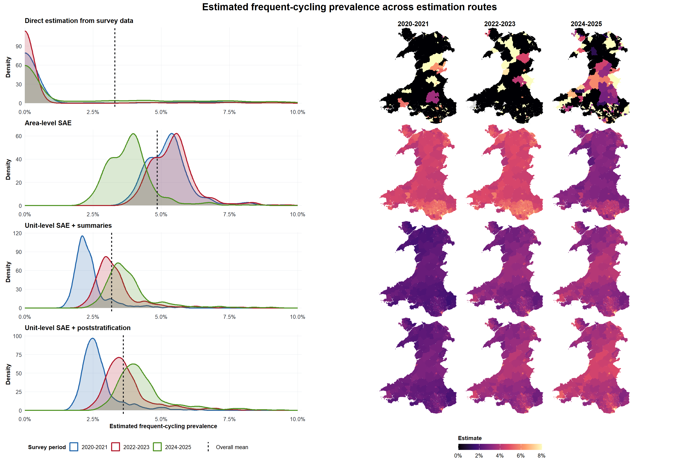
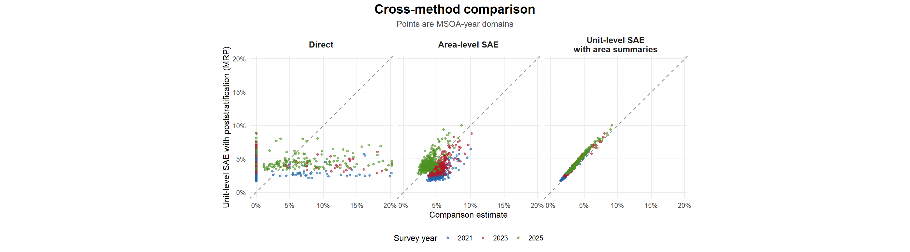
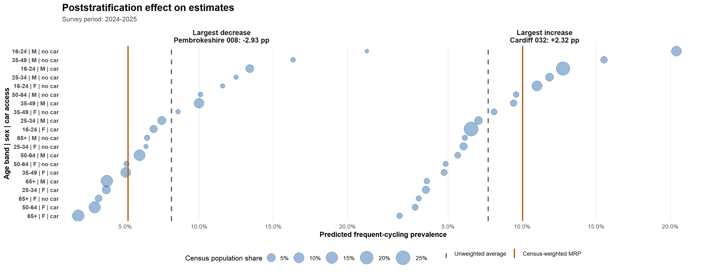
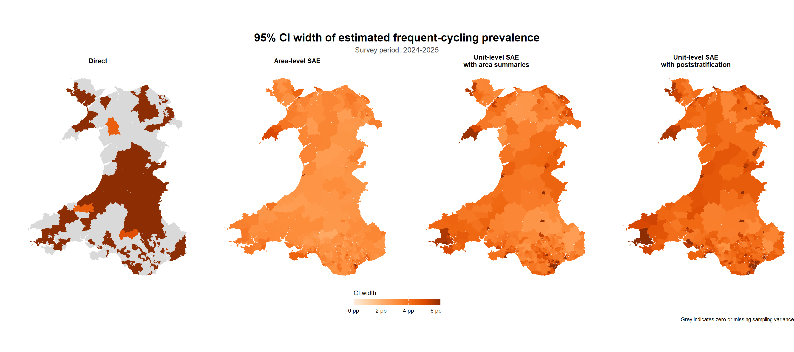
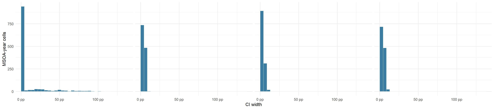
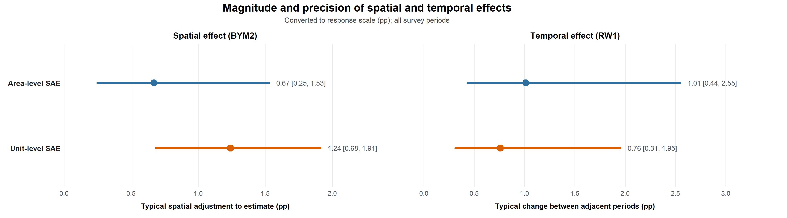
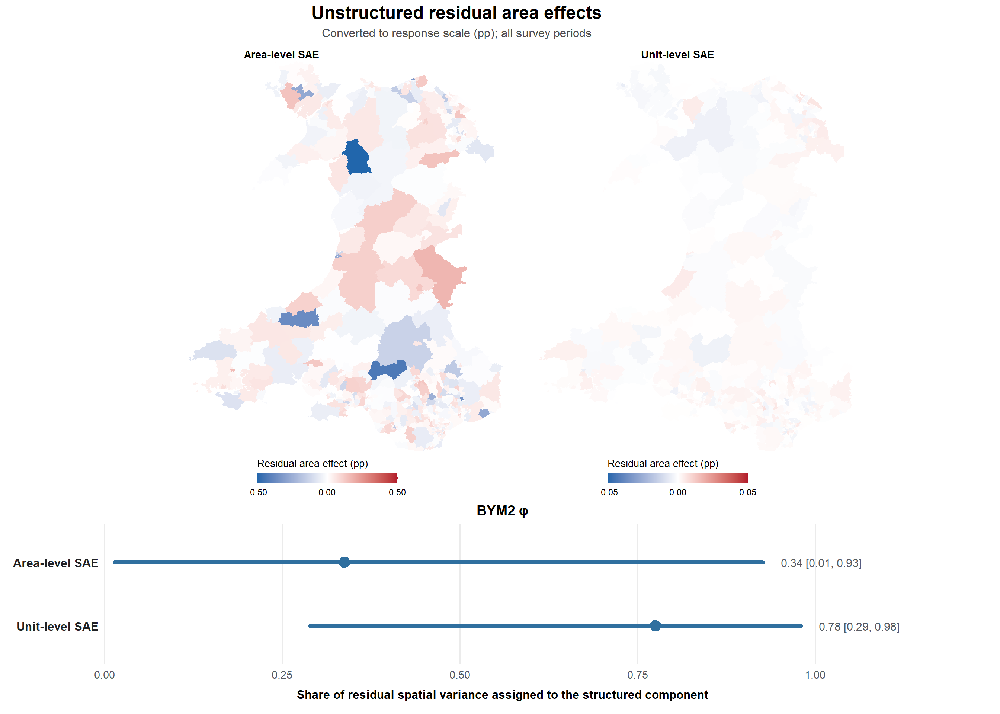

Model diagnostics and comparison
Estimates, uncertainty, and residual structure
This comparison focuses on the trade-offs between direct estimation, area-level SAE, unit-level SAE models, with and without poststratification.
| Method | Estimation approach | Data requirements | Main limitation |
|---|---|---|---|
| Direct estimation | Uses survey responses within each MSOA-year cell to calculate a survey-weighted direct estimate. | None | Sparse or missing cells can give unstable estimates. |
| Area-level SAE | Uses direct estimates and sampling variances, then smooths them with an area-level model. | Low | Depends on the quality of the direct estimates. |
| Unit-level SAE with area summaries | Fits a unit-level model to survey microdata, then evaluates it using MSOA-level predictor summaries. | Moderate | Area summaries only approximate the population composition, not robust for binary outcome. |
| Unit-level SAE with poststratification | Fits a unit-level model to survey microdata, predicts age-sex-car population cells, then aggregates using cell counts. | High | Adding more predictors produces suppressed cells (false population zeros). |
1 Estimate smoothing and target population adjustment
The distribution and rank plots compare the spread of MSOA-year estimates across methods, while the maps compare the local pattern of estimated frequent cycling.
- Direct estimates retain the most cell-level variation. Model-based estimates are smoother because they borrow strength across areas, years, predictors, or poststratification cells. The area-level model is anchored by the direct estimates, so weak direct evidence can influence the modelled results.
- Differences between the estimates from the two unit-level models are more subtle because they use similar models and spatio-temporal structure. Their main difference is the aggregation step: the poststratified model averages predictions over age-sex-car population cells, while the area-summary model substitutes MSOA-level predictor summaries. Poststratification better aligns predictions with the target population composition; area-summary substitution is more approximate and does not itself correct survey selection bias.

Poststratification changes how the predicted population cells are aggregated. By examining the two MSOAs with the largest increase and decrease after adjusting to the Census population shares, we see that the Cardiff MSOA with higher proportions of groups that are more likely to be frequent cyclists (e.g., 16-49 males with no cars) sees a upward poststratified adjustment compared to the other where there are higher proportions of groups with lower probabilities (e.g., 50+ females with access to a car).

2 Uncertainty improvement
Interval width shows the precision gained or lost by each method. Direct-estimate widths reflect sampling variance, while model-based approach produced creidle interval widths which reflect posterior uncertainty after borrowing strength across areas, years, or predictors.


3 Spatial and Temporal Effect
The posterior precision hyperparameters, \tau, determine the variability of the random effects, with a latent-scale standard deviation of 1/\sqrt{\tau}. After conversion to the response scale of frequent-cycling prevalence (percentage point), the temporal effect indicates that estimates typically differ by approximately 0.75–1 percentage point between adjacent survey periods. The spatial effect produces a larger typical adjustment in the unit-level model than in the area-level model, indicating that residual geographic variation plays a greater role in differentiating its estimates across MSOAs.

The BYM2 mixing parameter, \phi, describes how residual area variation is divided between the structured and unstructured components: values closer to one indicate greater reliance on the adjacency-based structure, while values closer to zero indicate greater reliance on independent area effects. The lower \phi estimated by the area-level model indicates that less residual variation is attributed to similarities between neighbouring MSOAs. This is consistent with sparse direct estimates and uncertain sampling variances providing limited information from which to identify a coherent spatial pattern.
The unit-level model uses individual responses directly and estimates a higher \phi, attributing more residual variation to the structured component. This allows information to be shared between neighbouring MSOAs and leaves much smaller unstructured area effects. The adjacency structure therefore appears more informative for the unit-level model in this scenario.
